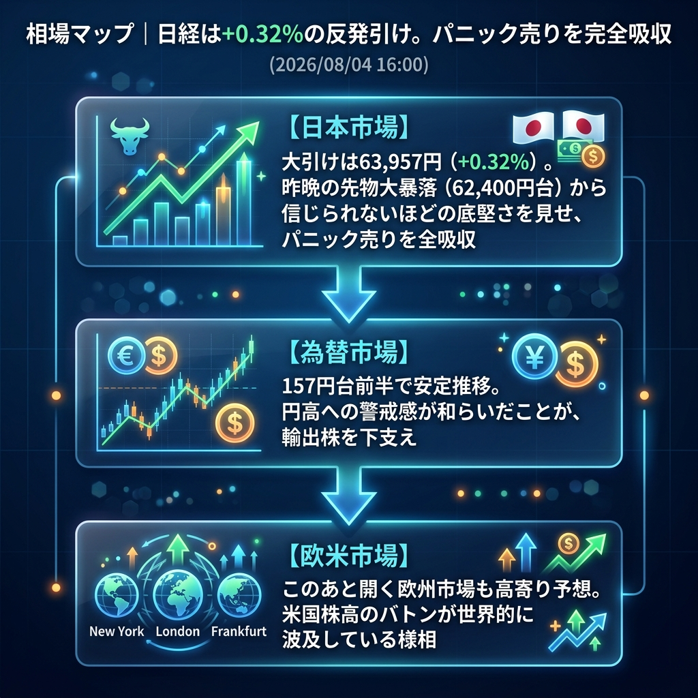

昨日のパニック売りを見事に吸収し、日経平均は前日比+0.32%（63,957円）の反発で大引けを迎えました！
米ISM製造業景況指数が景気後退の不安を打ち消したことで、米国株が大幅高となり、さらにドル円が157円台へと円安方向に落ち着いたことが最大の勝因です。恐怖に支配されていた相場は、再び冷静さを取り戻しています。
「パニック売りの全吸収」と「米株高バトンの波及」。
午後に入っても日経平均は崩れることなく、堅調な推移を続けました。オープンを控える欧州市場（DAXなど）も総じて高寄りが予想されており、米国株高のバトンが世界中の市場に波及し、「リスクオフからの脱却」が明確になりつつあります。原油価格の暴落も一服しており、最悪のシナリオ（ハードランディング）は一旦回避されました。
| 指数・銘柄 | 現在値 | 前回比（前日比） | 騰落率 | 確認事項 |
|---|---|---|---|---|
| S&P 500 (ES=F) | 7,657.50 | +29.25 | +0.38% | 時間外でも堅調 |
| Nasdaq (NQ=F) | 29,251.50 | +359.75 | +1.25% | ハイテク株への資金流入継続 |
| Dow (YM=F) | 54,048.0 | +714.0 | +1.34% | 堅調推移 |
| 日経225現物 | 63,957.53 | +202.63 | +0.32% | 【大引け】底堅く反発 |
| CME日経225先物 | 64,530.0 | +1140.0 | +1.80% | 欧州時間入りでも強い |
| USD/JPY | 157.358 | +0.167 | +0.11% | 安定推移 |
| EUR/USD | 1.1519 | +0.0005 | +0.04% | 横ばい |
| 金 | 4,125.2 | +34.7 | +0.85% | 底堅い |
| 原油 | 77.15 | -3.19 | -3.97% | 下値模索 |
| BTCUSD | 63,906.61 | +442.89 | +0.70% | 堅調 |